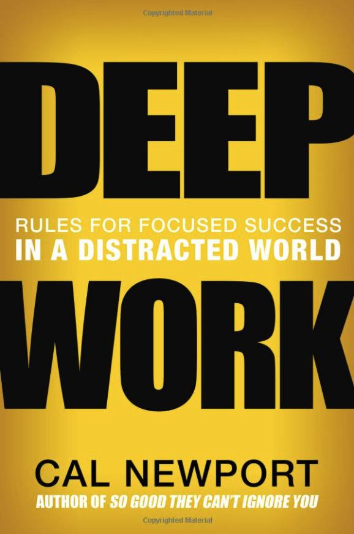

Introduction
We’re living in an information/knowledge economy which means people are rewarded for the valuable things they produce. Therefore, the more knowledgeable a person is, the more valuable he’ll be in such economies. As result, a person needs to continuously invest in himself/herself since technology is changing so rapidly. People who don’t invest in acquiring such knowledge quickly will be losing their value in this economy and lose their competitiveness.
To thrive in this economy, a person should:
- Be able to learn hard things. Since technology is changing rapidly, this means that the person needs to learn quickly and such learning never ends.
- Produce at an elite level in terms of both quality and speed. This means in addition to mastering the foundational (relevant) stuff, put the extra time and effort to produce something novel and complex.
To learn hard things quickly, we must focus intensely and without distraction.
Current State
The trends in the corporate world in the past decade or so tend to move in the opposite direction of what deep work requires.
- Open Spaces. More and more companies are moving towards open space offices which means a lot more distractions and makes it very hard for the employees to focus and concentrate on deep work. The rationale behind open spaces is to enforce more collaboration between teams and foster a better learning environment where employees learn faster by engaging with other employees continuously. However, multiple recent studies including a study from Google; which was almost the first to market for open spaces, showed that productivity doesn’t necessarily increase and employees are using a lot more emails/IMs than before even though they sit very close to each other. My experience is that this is just another illusion. The more cognitively demanding your job is, the harder it will be to work in open-space offices especially when multiple employees are on the phone at any given time during the day.
- Employees should always be connected and responsive. Most companies/managers especially in the west expect employees to always respond to emails even after-hours and on weekends. Such expectations would affect the employee’s ability to focus and do deep work. The sender sometimes creates or pushes the work to the receiver so that he/she can clear the inbox even though he/she could invest a little more time and figure it out himself. Meetings are another story by themselves. Most of these meetings don’t lead to anything: they don’t solve problems and don’t lead to actions.
One of the main reasons that corporates don’t adopt deep work strategies is that it is hard to show the effect of deep work on the bottom line of the business. It’s the same concept that it is hard to show the effects of habits on people’s lives. Plus, adopting deep work strategies means a lot more work in the short-run for managers and others since now they just can’t request information all the time from their employees and they need to do some work to figure it out.
Rules
Below are some of the most important rules to help us achieve deep work.
RULE I: Deep Work
high-quality work = time spent x intensity of focus
When switching between tasks, there is an overhead cost called “attention residue” where it takes time to completely switch the brain and clear it off from the previous task and start focusing on the new task —> Another reason for intense and concentrated focus.
Seeing an email or a message that you can’t deal with now dampens the performance because now we have attention residue about the message and have a secondary task left unfinished on top of the primary task we are performing.
To produce at peak level, we need to work for extended periods with full concentration on a single task free from any interruption/distraction.
Attention
The role of attention - what we choose to focus on and what to ignore - plays a huge role in the quality of our lives. Who you are, what you think, feel, and do, and what you love - are the sum of what you focus on. Concentration leads to no attention left over to think about anything irrelevant or worry about problems. When we lose focus, our minds tend to focus on trying to fix what’s wrong in our lives instead of what’s right.
The best moments usually occur when a person’s mind or body is stretched to its limit in a voluntarily effort to accomplish something difficult and worthwhile. Free time is harder to enjoy because it is highly unstructured and requires much greater effort to be shaped to make it enjoyable.
Deep Work
Deep work is required to hone skills that allow us to consider our jobs as crafts and be able to apply those skills to the job so that we start having meaning in our professional jobs.
We have a finite amount of willpower that becomes depleted as we use it. For example, we can fight the desire to check our inbox or social media; however, with time, our willpower gets drained and could no longer resist the desire.
The chain method is a way where we cross each day we do a defined task with a red X. The chain will grow and gets longer every day. The challenge would be to not break the chain —> Do that task every day. In other words, be consistent.
Modes of Deep Work Scheduling:
- Monastic - Focus almost all of your time on the important and valuable tasks that require deep work by minimizing and maybe getting rid of shallow tasks. Very few people can afford such a style and mostly those people who are very influential in their fields and have created unquestionable value using their talent such as Donald Knuth (father of modern algorithms).
- Bimodal - The best example is when you take an extended period such as a month or so and isolate yourself and do only deep work while the rest of the time you do the normal work that includes shallow tasks that can’t be avoided.
- Rhythmic - Schedule a set time for deep work such as between 5-7 am every weekday. This works with most people due to the reality of human nature.
- Journalist - Fit the deep work whenever you can into your schedule.
Effective rituals help us engage in long deep work sessions such as:
- Where you’ll work and for how long
- How you will work once you start such as restricting the use of the internet or metrics to evaluate progress
- How you’ll support your work such as stuff needed (coffee, food, resources, books, walks, etc.)
Changing the environment seeking quietness and inspiring surroundings helps in achieving going deep. It first helps the brain to overcome procrastination and other mental obstacles after all the investments in effort and money have been made toward that goal. It also helps the deep goal to be at a higher level of mental priority.
Even though it may look like a contradiction to the deep work, collaboration is a complement to deep work to get invaluable outcomes. We should optimize for both collaboration and deep work separately not together. We still use deep work to get the best out of our capabilities; however, collaboration helps in learning from others and getting feedback as well in the form of discussions, white-boarding, and co-authoring. Etc.
Executing a deep work plan as a business plan makes deep work more meaningful:
- Have an identified goal that is tangible
- Lag measures deal with the long-term goal and Lead measures deals with short-term behaviors that we can control daily that also lead towards achieving the lag measure. We should focus on the Lead measure because it is more relevant and can easily be controlled and changed by getting feedback on how we’re doing.
- Keep a compelling Scorecard that tracks your performance. This will reinforce attention and drives more motivation towards the wild goal.
- Create Accountability. This can be done by a weekly review of the scorecard to celebrate achievements and investigate bad results to avoid in the future. Then plan for the next week to achieve a lead measure.
Brain Downtime
Research has shown that some decisions are better left off to the unconscious. Such decisions are complex and require processing a lot of information to come up with solutions. The unconscious is known to have more neuronal bandwidth which means faster moving information around and sorting through complex tasks. On the other hand, consciousness is better left to tasks that have more strict rules such as mathematics. Therefore, it is recommended to have brain downtime to help diversify the work between conscious and unconscious.
Attention is finite. This means if we exhaust this resource we would struggle to concentrate. Walking in nature leads us to use less directed attention than walking in the city. The same can be said when we watch TV where we use some of the directed attention that will reduce our ability to focus for long hours. Also, walking through nature has enough stimuli that help replenish directed attention resources and boost concentration. Any activity that frees us from directed attention would help boost concentration such as prayers/meditation/conversation with a friend, etc. We can conclude to make sure to not engage in work-related stuff in the evenings because it will prevent us from restoring directed attention and may not help us focus the next day.
Research has also shown that there is a limit to how long a person can spend in deep work. It can start from an hour for beginners to 4 hours as the limit for the experts. This means evening time work is beyond the point where we’re alert to perform cognitively demanding work (and deep work as well). It would usually be a slow pace work. Therefore, we may not be missing much in the evening downtime
Develop a habit to help with brain shutdown that should be done by the end of the day. It can be something like this:
- Check email and make sure nothing urgent hasn’t been addressed.
- Look at the to-do list and go over all items to make sure every item has a plan in place. Helps in avoiding surprises when meetings/deadlines are approaching.
- Plan (roughly) for the next day.
This will help brain idleness and be ready to Shutdown
RULE II: Embrace Boredom
Just like any other habit/muscle, the ability to focus and goes into deep work requires practice and training that gets better with time.
Constant attention switching has a lasting negative effect on our brains. Our working memory will always have irrelevant stuff for the current task at hand and it becomes harder to filter out the irrelevancy. Therefore, even if we try to focus it will not work because our brain is trained to handle any minute of boredom. For example, if we are in line waiting for something, the brain feels relieved when we glance at our smartphones. This prevents us from being laser-focused even if we set time to practice concentration.
Since deep work is a skill (not a habit) that needs training, we need to address two goals:
- Improving our ability to concentrate intensely
- Overcoming the desire for distraction
To succeed in deep work, we must train our brains to be comfortable resisting distracting stimuli and tolerate boredom. The way to help us achieve that is by scheduling Internet Blocks where we are allowed to use the internet only when the time arrives for each block. Whatever the temptation is, we should not use the internet outside of the scheduled blocks. This will help the brain regain attention autonomy.
To push the level of intensity of concentration, every week identify a deep task that needs to be completed and is a high priority on the list. Then commit to finishing the task in a time less than what usually takes you on average. So, for example, if the task requires 10 hours to be done, commit to finishing it in 9 hours. This will push you to work intensely to get it done - no emails, no social media. When approaching the task, attack it with every neuron to get it done before the deadline. As weeks go by, the intensity would go up (to 8 hours then 7 then 6 etc.) and that helps the brain to work more intensely. Try this experiment at least once a week.
Productive Meditation
Use the time that you are physically occupied but mentally free to practice productive meditation. For example, use the commute time to think about one of the problems you’re facing professionally and think about it during the commute time. Every time you get distracted, you must get back to the main problem you defined at first. This will help you think deeply by strengthening the distraction-resisting muscle and pushing your focus deeper and deeper on the problem which will in turn sharpen your concentration. We can schedule a walk during lunch to help achieve the same results. At the beginning of adopting such a strategy, you may not see valuable results but surely after a week or so it would kick in and should start reaping the benefits of this strategy.
Avoid
- Distractions that come in the form of doing something also important but not related to the problem you defined to dig deep into. Always return to the main problem.
- Looping is where the brain tries to avoid thinking about the hard part of the problem and instead focuses on what you already know about the problem which is not helpful. The brain does that to avoid spending too much energy on the hard part and wants the easy way.
Structure your deep thinking by first introducing and storing the variables of the problem. Then identify the next question that you need to answer. Finally, consolidate the gains by reviewing the process that you followed to solve the question. This will improve the ability to go deep in later sessions.
Memory Training
Research has shown that mental athletes who train their memories to memorize as much as they can develop their cognitive ability of attention control, i.e. maintain their focus on essential information. This will have a side effect on the general ability to concentrate. Memorizing Quran can act as a tool for memory training where you will get the best of both words - memorizing the Quran (good deeds) and improving the ability to go deep and concentrate.
RULE IV: Drain the Shallows
Performance psychologists found that a person’s limit of deep work varies between 1 hour (novice) to 4 hours (familiar with the field) but rarely more.
Shallow work is unavoidable in many situations; otherwise, you would lose your job if you cut it out completely. The objective here is to try to keep it to a minimal level that keeps you going but not consuming much of the energy that you should spend on deep work.
Plan every minute of your workday. This can be done either in the morning or the previous night. Divide the workday into blocks where each block is at least 30 minutes. Be flexible for anything that comes up that leads to changes in the schedule because this will happen daily. Even if a task took longer than planned or you came up with a creative idea/insight, you can adjust the schedule. Keep refining the schedule during the day and don’t feel that you have to follow the schedule because the essence of planning out the day is to have control over your day and don’t let shallow works dominate your day.
Shallow work - non-cognitively demanding, logistical-style tasks, usually performed while distracted.
To determine the scale of each task on the shallow-to-depth scale, determine how long a recent smart college graduate needs (in months) to train to do the task. The lower the number of months the shallower the task. Therefore, try to stay away from tasks that are shallower and prioritize the deeper tasks.
Good rules of thumb for using email:
- Make people who send you e-mails do more work.
- Don’t respond - it is the sender’s responsibility to convince the receiver that a reply is worthwhile.
- Do more work when sending or replying to emails.
Conclusion
Deep work is a skill that gets valuable things done. It helps prioritize the important and cognitively demanding tasks over shallow tasks that are not valuable both intellectually and professionally. As with any other skill, it requires training and careful attention for continuous improvement. Deep life, of course, is not for everyone. It requires hard work and leaving stuff behind to live a more productive and meaningful life that can contribute to changing the world for the better and pushes you to the limit of your cognitive abilities.